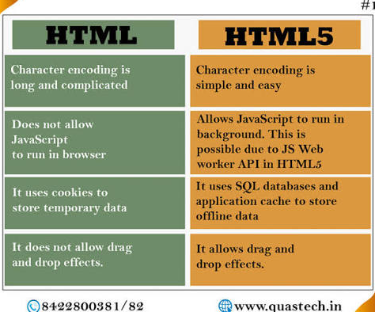
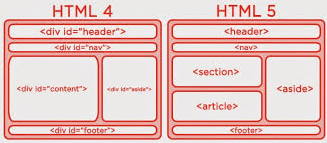

HTML5 is the fifth version of HTML with improvements in website capabilities, web content and more.
HTML5 was released in 2014 and makes coding so much easier due to the fact it uses !DOCTYPE HTML
HTML5 is simpler because it was designed to be easier for humans to debunk and read, unlike HTML4 which is more computer-like and harder to understand. HTML5 is also better because once complex codes like audio and video are now easier than it had been in previous years. One more reason is it was built to be able to handle today's complex internet and it's easier because you don't need messy workarounds and complex coding skills for simple things.

HTML4 required a long, complex Document Type Declaration (DTD) that was nearly impossible to memorize. It forced developers to reference specific web standards (Strict, Transitional, or Frameset). HTML5 simplified this down to just a single, easy-to-remember line.

Source:
What is HTML5 (spiceworks.com)Source:
HTML4 and HTML5 difference(shiksha.com)